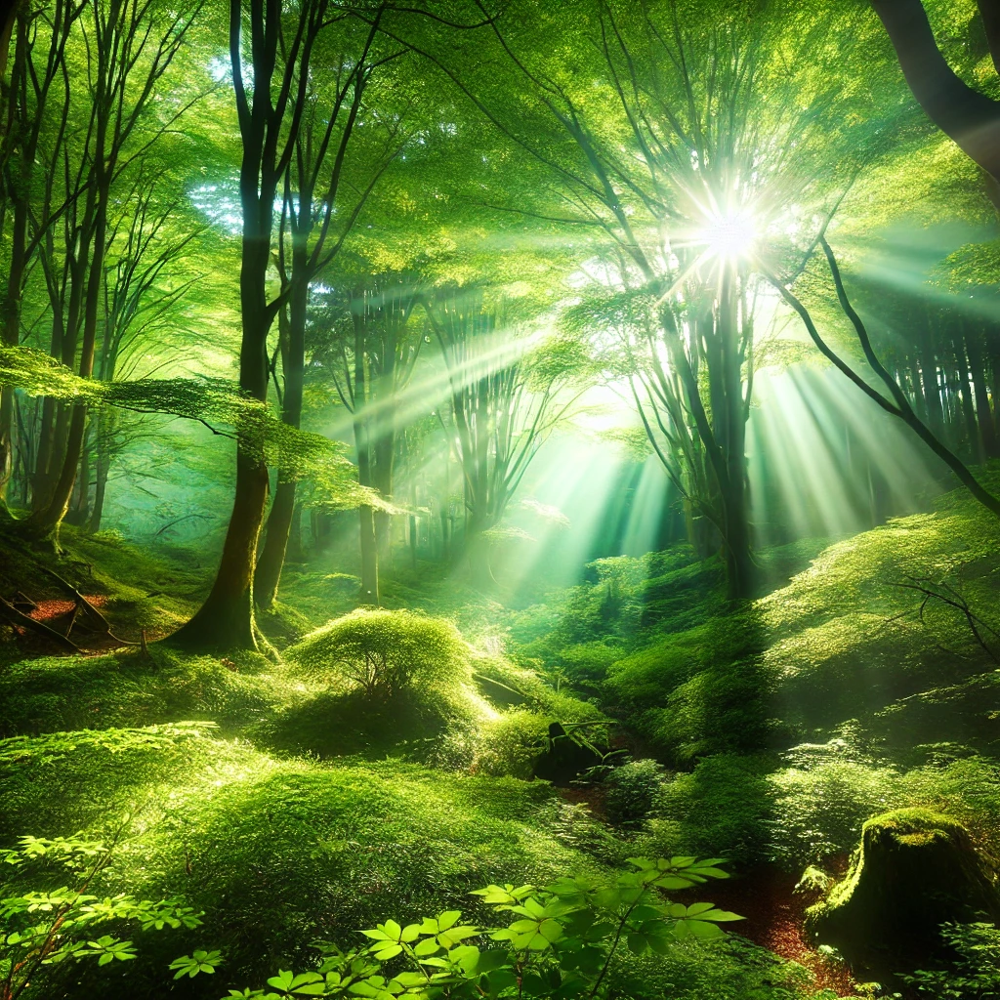
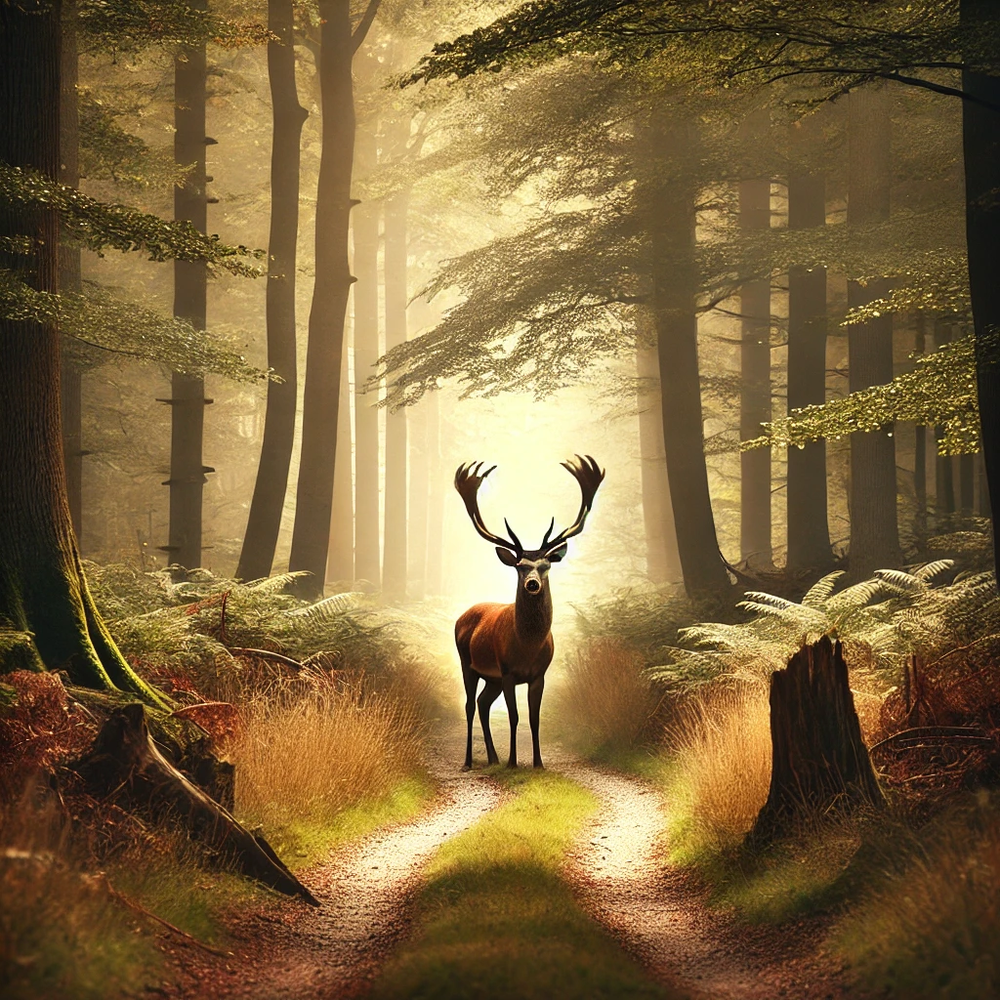
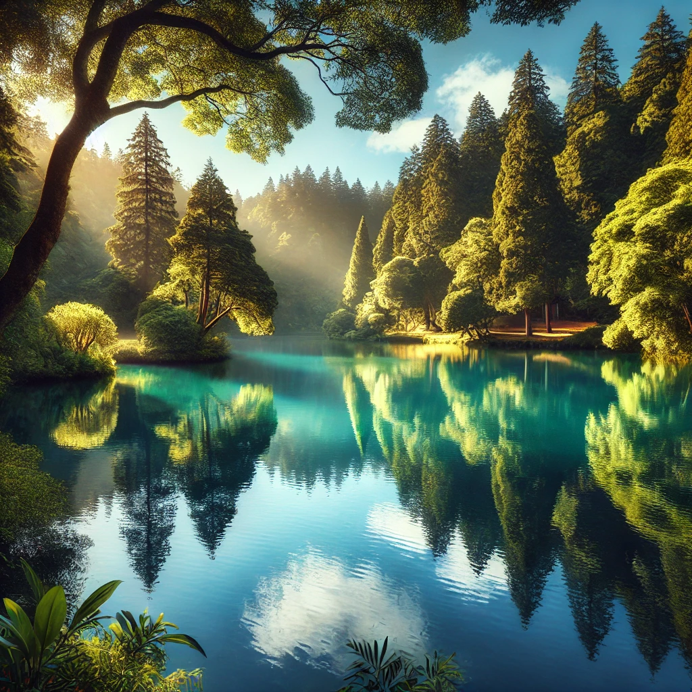

Природа — это гармония и красота, окружающая нас повсюду. Каждое её проявление удивительно и неповторимо.


Свежий воздух, шелест листвы, пение птиц — всё это дарит спокойствие и вдохновение. Достаточно выйти на прогулку, чтобы почувствовать себя частью этого мира.
Природа — дом для множества живых существ. Берегите её, ведь каждый лес, река или поле важны для поддержания баланса жизни.

Заботясь о природе, мы заботимся о будущем. Маленькие поступки, такие как раздельный сбор мусора или посадка деревьев, помогают сохранить этот удивительный мир.